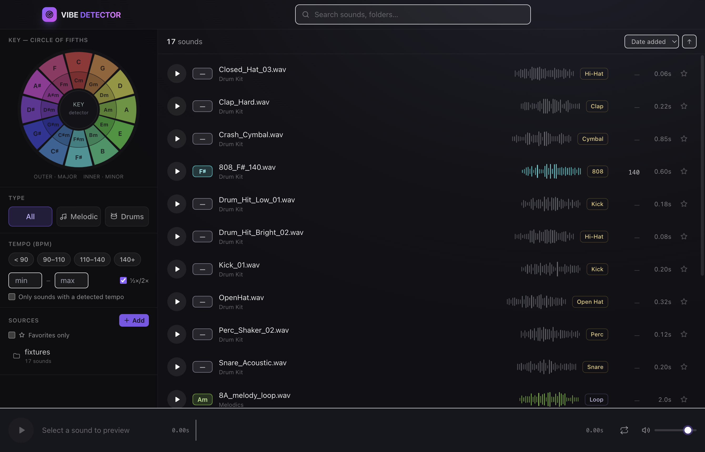

A local-first sample browser that detects key, BPM, and type — so you can find, preview, and drag the right sound straight into your DAW.

Point Vibe Detector at your sample folders. It scans recursively and watches for changes.
Key, tempo, and drum/melodic type are detected automatically — on device.
Audition instantly with a real waveform, looping, volume, and keyboard control.
Drag one or many sounds straight into your session as real files.
Every musical key maps to a hue around the circle of fifths. Once you see your library in color, harmonic relationships jump out — adjacent keys layer cleanly, parallel minors sit one ring in.
Click the wheel — currently showing A.
Major and minor, mapped to the circle-of-fifths color system — filename, metadata, then on-device audio analysis.
BPM with ½× / 2× awareness, plus preset and custom ranges so loops line up.
Drum vs melodic, plus subtype: kick, 808, hi-hat, snare, loop, pluck, pad…
Suggests nearby keys and tempos for layering and transitions.
Detection runs entirely on-device. No uploads, no accounts, no cloud. Local-first and fully offline — your unreleased work stays yours.
Free and local-first. Pick your platform — your build is ready below.
Builds are unsigned (no paid certificate), so each OS warns on first open — expected for
self-distributed apps. On macOS: right-click the app → Open → Open, or run
xattr -dr com.apple.quarantine "/Applications/Vibe Detector.app".
On Windows: More info → Run anyway.